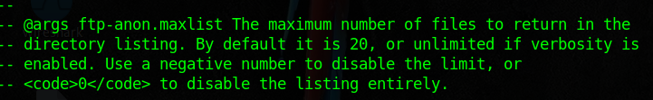

Principios básicos de Redes. Informações dos modelos OSI, TCP/IP.
Não precisa de resposta , é só ligar a máquina virtual (VM)
Quais construções de rede são usadas para direcionar o tráfego para aplicativo correto em um servidor?
Ports ou Portas
Um termo usado para indicar um ponto físico ou uma entrada num dispositivo, e "Portas" são necessárias para conexões multiplas em uma Rede.
Quantas portas estão disponíveis em qualquer computador dentro de uma Rede?
Qualquer computador tem 65535
Mas muitas dessas, estão registradas como portas 'padrão', outras são 'reservadas', 'portas privadas' Wikipedia
Quantas destas portas são consideradas como "bem-conhecidas"?
As portas de 0-1023
Qual é o primeiro 'switch' ou comutador listado no menu 'ajuda' para um "Syn Scan"?
Qual switch seria usado para um scan (varredura) "UDP"?
Se você quer detectar o sistema operativo em funcionameto, qual switch teria que usar?
Nmap tem um switch para detectar a versão do serviço que está funcionando no computador 'alvo', qual é?
A saída padrão do nmap não tem suficiente informação para um Pentester. Como incrementar essa informação de saída?

'Verbosity' ou mais informaçãode saída, é um nível bom, mas o nível 2 é melhor! Como incrementar o nível?
Sempre deberiam ser salvos as varreduras (scans) o que significa que seria preciso funcionar uma vez só (reduzingo o tráfrego de rede e chance de ser detectado), dando referências para quando for feito o "reporte" escrito para o(s) cliente(s). Qual switch é usado para salvar os resultados do nmap nos 3 melhores resultados?
Qual switch debería ser usado para salvar os resultados do nmap, em um formato 'Normal'?
Um formato de saída muito útil: Como sería salvo os resultados em um formato "grepable"?
As vezes os resultados não são suficientes.Se não se importa com o barulho que gera na rede, é possível abilitar o modo 'Agressivo'. Uma abreviada de ativar a detecção de serviços, sistema operativo, um mapeamento de rede e uma varredura (scan) script. Qual é ativado esta opção?
Nmap oferece 5 níveis de tempo. Estes são essencialmente usados para incrementar a velocidade da varredura (scan). Como escolher o tempo no nível 5?
Como escolher qual porta fazer o scan (varredura), para fazer somente na porta 80?
Como fazer um scan (varredura) entre a porta 1000-1500?
Como fazer um scan (varredura) de todas as portas?
Como ativar um script da biblioteca de scripts do Nmap?
Como ativar todos os scripts na categoria "vuln"?
Uma breve informação
Há 3 tipos de varredura (scan):
Se uma porta está fechada, qual "Flag" (sinalização) o servidor debe enviar de volta para indicar o acontecido?
Se o Nmap
envia um pedido TCP com um flag SYN como porta 'fechada', o servidor alvo irá responder com um pocote TCP tendo um flag de RST (reset).Dessa forma que o Nmap entende que uma porta está fechada.

Há dois tipos de nomes para um scan SYN, quais são eles?
SYN scans
É usado para fazer uma varredura TCP de um alcance de portas de um alvo ou alvos.
O Nmap pode usar um Scan SYN sem a permissão Sudo* (Y/N)'yes/no'
Este tipo de varredura requer
permissões SUDO, para funcionar corretamente, este tipo de scan tem a abilidade de criar pacotes brutos(sem formatação) que é possível só com o adm root.
Se uma porta UDP não responde pra a varredura do Nmap, como esta será mostrada?
Em outras palavras open|filtered
É suspeito que a porta esteja aberta, mas poderia estar protegida por um firewall.
Quando uma porta UDP está fechada, por 'padrão' o alvo tem que enviar de volta uma mensagem "port unreachable" (porta fora do alcance). Qual protocol é usado para isto acontecer?
O ICMP (ping)
Contém uma mensagem, que a porta está fora do alcance.Dessa forma o Nmap reconhece a porta fechada e continua com o serviço.
Qual dos três tipos de scan (varredura) usa o 'Flag' URG (urgente)?
Xmas
envia um pacote TCP malformado e espera de volta uma resposta RST (reset) indicando 'porta fechada'.
Para que as varreduras (scans) NULL, FIN e Xmas são utilizadas?
Firewall Evasion ou Evasão do Firewall
Que é nada mais e nada menos que burlar a segurança de um firewall.Aparelhos mais modernos tem melhor segurança contra este tipos de varreduras, não tem um que seja 100% confiável.
Qual Sistema Operativo mais comum responde a este tipo de varredura NULL,FIN ou Xmas com um RST(reset) para cada porrta?
No RFC 793
Diz que redes de computadore respondem para pacotes mal formados com um RST TCP pacote pra portas fechadas e não responde quando as portas ficam abertas.Mas a Microsoft Windows e alguns aparelhos de rede (modems, switch) são conhecidos por responder com um RST para qualquer pacote malformado independente da porta estiver aberta ou fechada.
Como realizar um ping na rede 172.16.x.x(com uma mascara de: 255.255.0.0) usando o Nmap? (CIDR)
A notação CIDR
Classifica por 'Classe' (A,B ou C) A mascara de rede demonstra que é de Classe B, o que significa que 255,255 é para a 'Rede' e 0,0 é para o 'Host' 255=8bits.
NSE (Nmap Scripting Engine) Mecanismo de Varredura do Nmap, é um adicional poderoso do Nmap, podendo exnteder as funcionalidades.
Qual a linguagem em que estão escritos os scripts NSE?
Estos scripts
São usados para uma variedade de coisas: como scans de vulnerabilidades, automatização de exploits.
Qual categoria de scripts pode ser uma má ideia utilizar para um ambiente de produção?
As Categorias:
Qual opção pode associar o script ftp-anon.nse ?
Fazendo um 'cat' no ftp-anon.nse

Procure pelo script "smb" no diretorio /usr/share/nmap/scripts/ usando os metodos da aula. Qual é nome do script que determina a base do Sistema Operativo de um servidor SMB?
Fazendo um grep 'smb'
Lendo o script, do que este depende para funcionar?
Fazendo um CAT/LESS
Qual protocolo simples é bloqueado com frequência, requerindo o uso do -Pn switch?
O switch -Pn
Trata os host ou computadores como 'online'.Geralmente um host windows com seu firewall padrão, bloqueia todos os pacotes ICMP, e isto representa um problema: com frequências é usado o 'ping' para estabelecer manualmente atividade no servidor ou computador.Nmap faz o mesmo por padrão,o que significa que irá encontrar um host com configuração de um firewall como desligado.Para fazer um scan precisa aparecer como 'Ligado'.
Qual switch do Nmap permite adicionar um dado aleatório fora do padrão no fim dos pacotes?
O computador alvo responde a pedidos ICMP(ping)? (Y/N)
Realize um scan Xmas nas primeiras 999 portas do objetivo-- Quantas portas mostram como abertas ou filtradas (open|filtered)?
Há uma razão pelo qual os resultados do scan. Encontre qual é o switch para usar e leia a dica antes de pedir ajuda!
Na imagem de cima está a resposta.
Realize um scan TCP SYN nas primeiras 5000 portas do objetivo. Quantas portas aparecem como abertas?
Abre o Wireshark e realize uma scan de conexão TCP para a porta 80 no objetivo, monitorando os resultados. Tenha certeza que entendeu o que aconteceu.
Não precisa de resposta
Utilize o script ftp-anon no objetivo. Pode o Nmap fazer login com sucesso ao servidor FTP na porta 21? (Y/N)
Principios básicos de Redes. Informações dos modelos OSI, TCP/IP.

Enumerar e explorar redes I